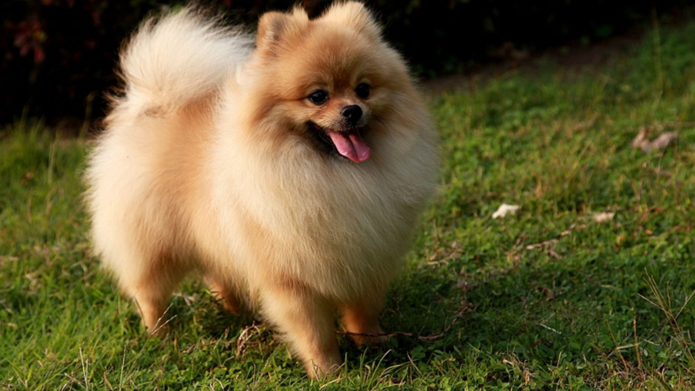

The dog (Canis familiaris[4][5] or Canis lupus familiaris[5]) is a domesticated descendant of the wolf. Also called the domestic dog, it is derived from an ancient, extinct wolf,[6][7] and the modern wolf is the dog's nearest living relative.[8] The dog was the first species to be domesticated,[9][8] by hunter-gatherers over 15,000 years ago,[7] before the development of agriculture.[1] Due to their long association with humans, dogs have expanded to a large number of domestic individuals[10] and gained the ability to thrive on a starch-rich diet that would be inadequate for other canids.[11]p>
| Dog Species | ||
|---|---|---|
| Name | Origin | Photo |
| Pomeranian dog | Germany |  |
| Golden Retriver | United states | |